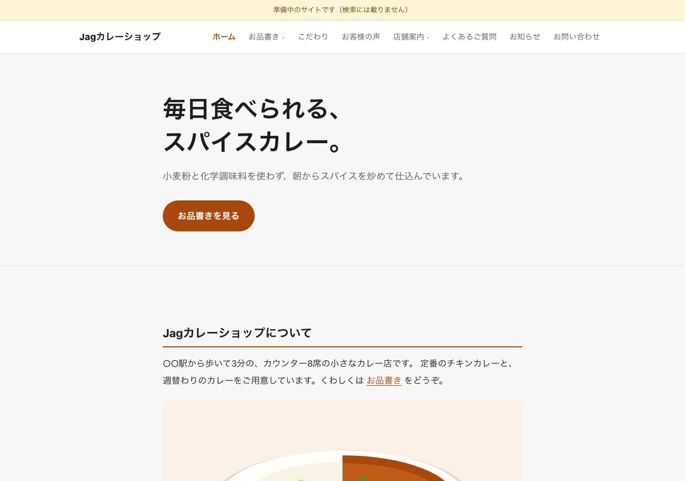
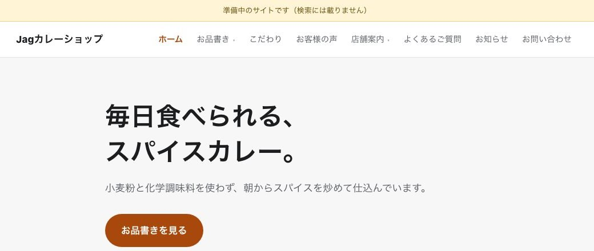
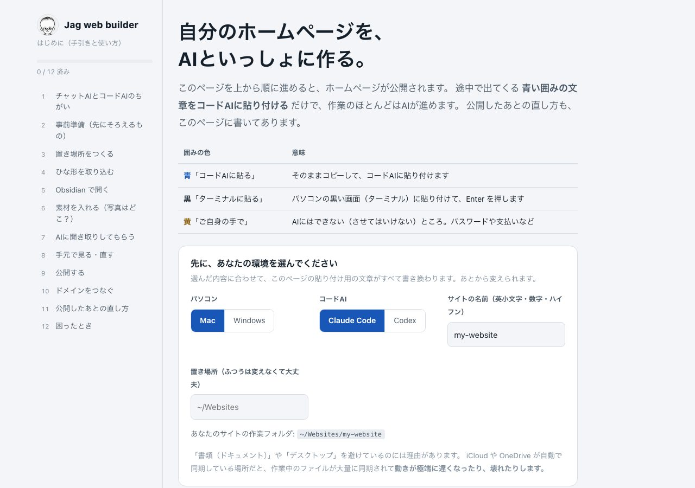

自分のホームページを、
AI といっしょに作る。
Jag web builder（ジャグ・ウェブ・ビルダー）は、無料のノートのアプリで書いたノートが、そのままホームページになる無料の道具です。メニューも、各ページの文章も、ブログもノートで書き、直したいときはノートを書き換えるだけ。管理画面はありません。
道具は無料（オープンソース・MIT ライセンス）。公開に月額の費用はかかりません（独自ドメインの代金を除く）。

こんなことで、困っていませんか
営業時間を 1 行直すだけなのに
制作会社に頼むと、数日待って費用もかかる。自分で直そうにも、どこを触ればいいか分からない。
管理画面を毎回忘れる
ホームページの作成サービスは月額がかかるうえ、たまにしか触らないので、ボタンの場所を毎回探してしまう。
AI を契約したのに、ホームページには使えていない
チャットで聞くと文章は書いてくれる。でも、ファイルを作ってサイトに出すところまではやってくれない。
サイトの中身が手元に無い
サービスをやめたら消えてしまう。文章や写真を、自分の手元に持っておきたい。
Jag web builder なら、こう変わります
| これまで | Jag web builder |
|---|---|
| 直すたびに制作会社へ頼む・待つ | ノートの文字を書き換えて、コードAI に「点検して公開して」と頼むだけ（頼む文章も手引きにあります）。自分で、すぐ直せます。 |
| 管理画面の使い方を覚える | 覚える画面はありません。いつものノートのアプリで、文章を書くのと同じように直します。 |
| 作成サービスの月額 | 公開に月額の費用はかかりません（独自ドメインの代金を除く）。道具も無料です。 |
| AI は相談相手どまり | 手引きの文章をコードAI に貼れば、ファイル作りから公開まで AI が進めます。ご自身の手が要るのは 2 か所だけ。 |
| 中身はサービスの中 | ページもブログも、ご自身のパソコンの中のノート（ファイル）です。手元に残ります。 |
| 一から作るのが大変 | メニューやページがそろった見本から始め、自分の店や会社の内容に書き換えます。 |
向いている方: コードAI を契約している店や小規模の事業者の方、Web の制作者（お客さまに更新を自分で続けてもらう道具として）。
ノートを書くと、ホームページが変わる
たとえばメニュー。下のように箇条書きでノートに書くと、そのとおりにサイトの上のメニューに並びます。行を足せば増え、消せば消え、字下げすれば子メニューになります。
見本の「メニュー」のノート（一部）。各ページも、ブログの記事も、同じようにノートで書きます。

できること
見本を書き換えるだけ
上のメニュー・子メニュー・下のメニューが最初からそろった見本を、自分の店や会社に合わせて書き換えます。
写真はフォルダに入れるだけ
決まったフォルダに入れると、サイト用に小さくし、写真の位置情報を消します。
書きかけは出ない
ブログは「公開する」と書いた記事だけがサイトに出ます。書きかけの記事が、知らないうちに公開されることはありません。
準備中は検索に載らない
まず検索に載らない設定で公開し、知り合いに見てもらってから、検索に載る設定に切り替えられます。
公開前の点検
公開の前に、下書きのままの記事などを一覧で確かめられます。
管理画面なし
覚える画面がありません。直したいときは、いつものノートを書き換えます。
チャットの AI と、作業をする AI は別のもの
ふだんの会話の画面で使うチャットの AI は、相談には乗れても、パソコンの中のファイルを作ったり、サイトを公開したりはできません。作業をするのは「コードAI」と呼ばれる、パソコンの中で手を動かす AI です。手引きは、この違いの説明から始まります。
はじめるのに必要なもの
手引きの最初の「事前準備」で、そろえ方を順に案内します。先にそろえておくと、途中で止まらずに進められます。
| パソコン | Mac または Windows。 |
|---|---|
| コードAI（有料のプラン） | Claude Code・Codex のどちらでも使えます（手引きで選ぶと、貼る文章がそれぞれ用に切り替わります）。作業（ファイル作り・公開）をしてもらう AI です。有料のプランの契約が要ります（チャットの AI だけでは作業ができません）。 |
| ノートのアプリ（無料） | Obsidian。文章を書く・直すための道具で、管理画面のかわりになります。 |
| Node.js（無料） | ホームページを書き出す道具を動かすためのものです。バージョン 20 以上。入れ方は手引きにあります。 |
| 公開先のアカウント（無料） | Cloudflare（クラウドフレア）。ホームページを置く場所です。無料のプランで足ります。アカウントはご自身で作ります。 |
| 独自ドメイン（任意） | ○○.com などを使う場合だけ、その代金がかかります。あとからでも付けられます。 |
先に決めておくと早いこと
屋号（サイトの名前）、載せる連絡先（メール・電話・住所。載せたくないものは載せなくて構いません）、営業時間や場所、商品やサービスと価格（税込みか税別か）、写真（スマホで撮ったままで大丈夫です）。メニュー表やチラシ、いまのホームページの文章も、そのまま AI に読ませられます。
パスワードやカード番号を AI に伝える場面はありません。
使い方（手引きに沿って 4 つ）
手引きを開き、環境を選ぶ
お使いのパソコンとコードAI を選ぶと、貼り付ける文章が選んだ内容に合わせて書き換わります。
青い囲みの文章を、コードAI に貼る
作業のほとんどは AI が進めます。
ご自身の手が要るのは 2 か所だけ
公開先の無料のアカウントを作ることと、ブラウザで「許可」を押すことです。パスワードやカード番号を AI に伝えることはありません。
公開したら、ノートで直す
メニュー・各ページ・ブログをノートで書き換えると、サイトが変わります。

費用と、用意するもの
| Jag web builder | 無料（オープンソース・MIT ライセンス） |
|---|---|
| サイトの公開 | 月額の費用はかかりません（独自ドメインを使う場合は、その代金がかかります） |
| コードAI | 契約は各自でご用意ください |
| ノート | 無料のノートのアプリを、手引きに沿って準備します |
対応していないこと
お問い合わせフォーム（いまは、メールアドレスと電話番号の掲載のみ）、ネットショップ、会員ページ。
Jag web builder は無料で公開している道具で、動作の保証や、ホームページの制作の代行は行っていません。
よくある質問
- Q. プログラムを書けなくても使えますか？
- 手引きの文章をコードAI に貼り付ければ、作業のほとんどは AI が進めます。ご自身の手が要るのは、公開先の無料のアカウントを作ることと、ブラウザで「許可」を押すことの 2 か所です。
- Q. Codex でも使えますか？
- 使えます。手引きの最初で「Codex」を選ぶと、貼り付ける文章と起動のコマンドが Codex 用になります。AI に読ませる説明書（AGENTS.md）も、Claude Code と Codex の両方に向けて書いてあります。
- Q. 店ではなく会社のサイトにも使えますか？
- 使えます。見本の「お品書き」を「サービス」、「店舗案内」を「会社概要」のように読み替えて、ノートの名前ごと変えて構いません。
- Q. Web の制作者が、お客さまのサイトに使ってもよいですか？
- 使えます。お客さまにホームページの更新を自分で続けてもらう道具としてお使いください。AI を使ったホームページの運用のご相談は こちら。
- Q. なぜ手引きにメールアドレスの登録が要るのですか？
- 手引きの更新など、使い続けるために必要なお知らせをお届けするためです。お知らせはいつでも止められ、止めても手引きは使えます。道具そのもの（ソースコード）は、登録なしで GitHub から入手できます。